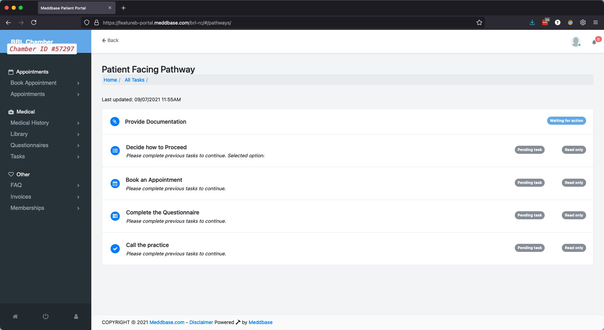
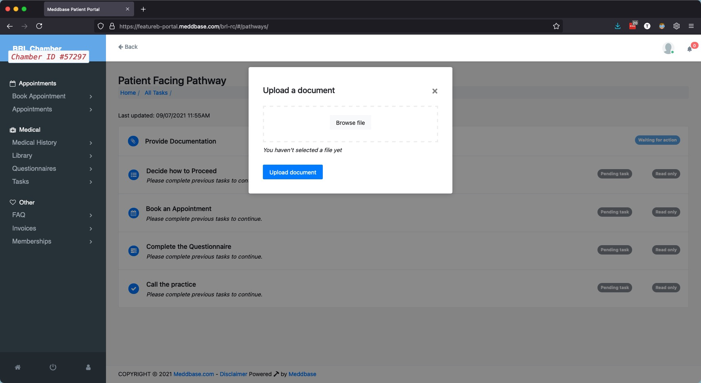
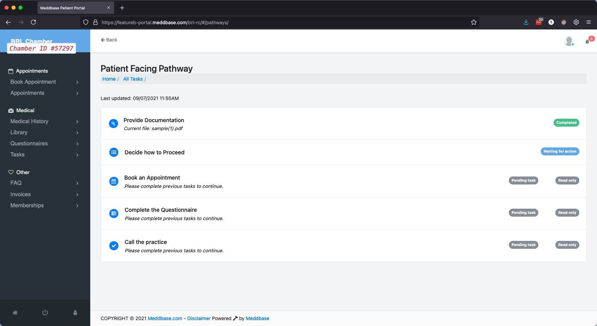
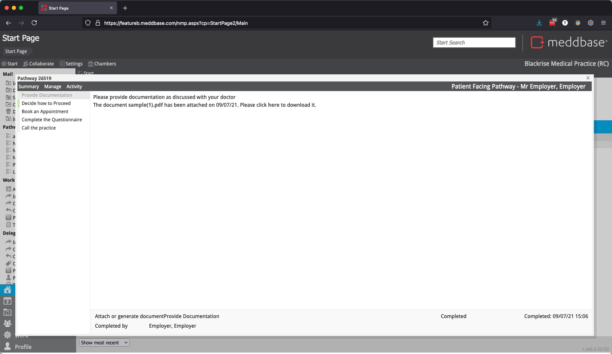
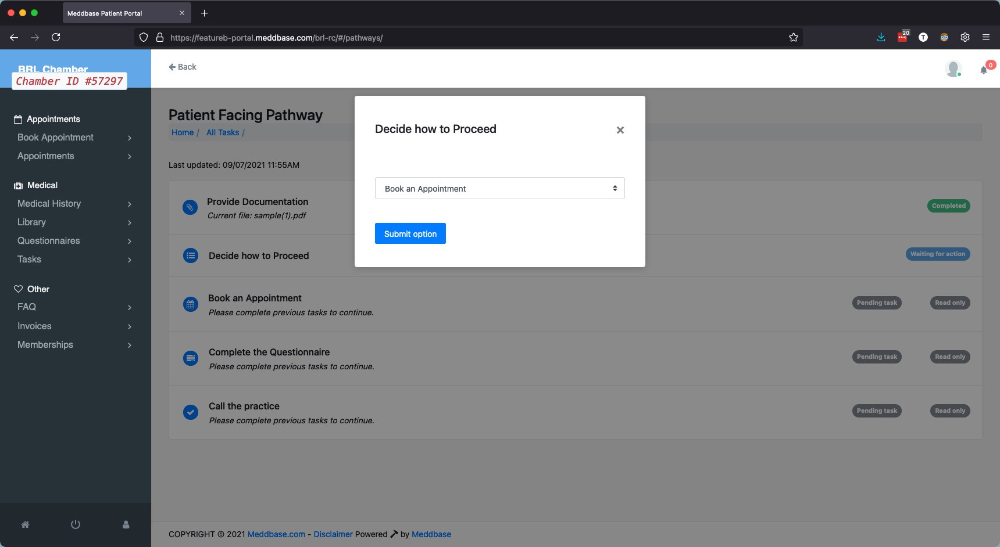
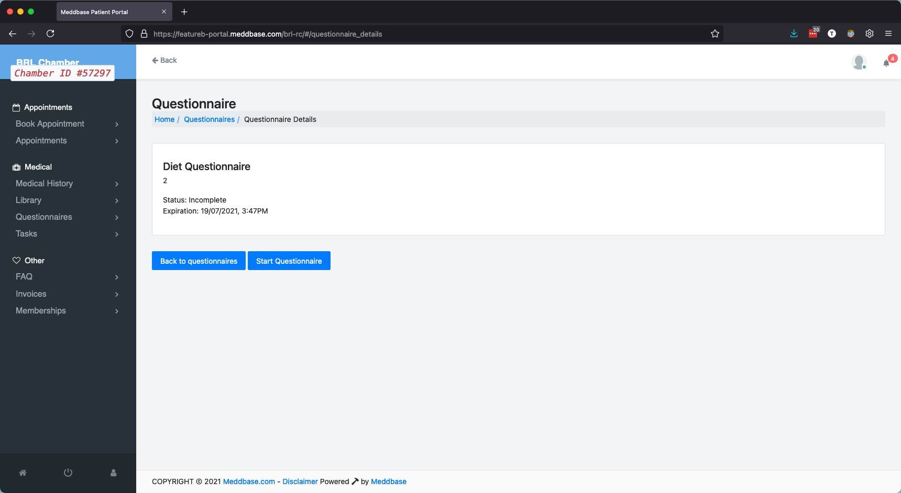
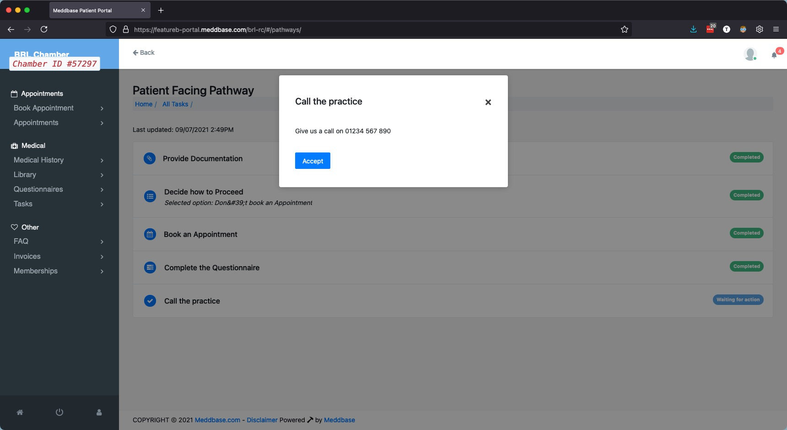

Pathways in Meddbase have a wide range of features and use cases, some of which allow patients to interact directly with the Pathway via the Patient Portal. This article will summarise and describe how these features can be used.
When a Pathway contains one or more tasks that are shared with the patient, they will be given access to the task(s) via the Patient Portal. Patients will be able to see that they have tasks available to them on the home page of the Patient Portal.
From the Patient Portal Home Page, the patient will be able to see the name of the Pathway and the first available action to which they have access. They can access all their available tasks by clicking on Tasks on the left-hand side, or selecting See all tasks below on the Patient Portal Home Page.

When a patient is asked to Provide Documents, they can either drag and drop the document to the Upload a document window or use Browse file to browse their computer to find the file manually.

Once the file has been uploaded, the patient will be able to see that the upload has completed successfully.

The document will be shared automatically with authorised Meddbase users via the Pathway.

Patients can be asked to make decisions, which presents a question to the patient with up to 5 possible answers in a dropdown menu.

The effects of these decisions can be wide-ranging but can include pushing the Pathway down a different route based on the answer the patient gives. This, in turn, exposes new tasks for the patient to complete.
If the Pathway asks the patient to book an appointment, upon opening the task, the patient will be presented with the normal booking workflow they would see if booking an unprompted appointment via the Patient Portal.
The Patient Booking workflow will use all the same Billing Rules specified in any Charge Band to which the patient has access. If you want more granular control over which appointment type should be booked, this workflow can be filtered to show one specific Appointment Type.
Patients can be prompted to complete a questionnaire as part of a Pathway. When this happens, the questionnaire becomes available to the patient via the Patient Portal in the Questionnaires tab.
If you want the patient to receive a task to complete the questionnaire this task trigger will have to be added to the Pathway.

As soon as the questionnaire is completed, the Pathway task will also be marked as completed.
General tasks allow patients to be presented with some static text describing what they need to do and give them the ability to mark the task as completed, which will move the Pathway on to the next step.
